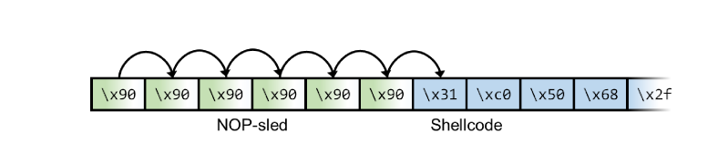
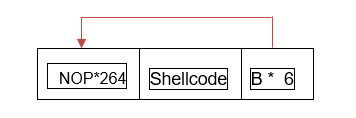

intro-to-buffer-overflow¶
theory - stack based buffer overflow¶
When compiling examples, dissable address randomization and stack protections. Use
gcc -fno-stack-protector -z exec stackand ensure that/proc/sys/kernel/randomize_va_spacehas value 1.
This category of exploits work because of the nature of the data structure called the stack. To accelerate our discussion, here are a few aspects of the stack data structure:
- used to store variables which have size/length at compilation time
- bytes get added to or removed from the stack with
pushandpopassembly instructions respectively - the value of
rspregister is an address that points to the most recent value added to the stack - the value of
rbpregister is an address that points to the base of the stack frame - during execution, each function gets its own stack frame
- when a value is added to the stack, the address inside
rspis decremented. This is the fundamental feature that enables the exploit. - when we write bytes to some location on the stack, consecutive bytes are written by incrementing the address we are writing to. Therefore whenever we write to the stack, if we mis manager our pointer then we may overwrite data previously pushed to the stack.
The intuition so far may be, "so what? we can overwrite data, maybe break something". However, it becomes clear how this can be weaponized once we examine exectution flow control. A major aspect of flow control is implemented by the stack, that being return addressing. When a function is called, we need a way to continue to execute the assembly instructions once the function has finished its work. When functionA calls functionB a new stack frame is built and two important values are saved onto the stack by doing push instructions.
push rippush rbp
these values will be referred to as "saved
rip" and "savedrbp", note that savedrbpis at a lower memory address than savedripdue to how the stack is implemented.
The register rip contains an address that points to the next assembly instruction, by saving the value of rip on the stack, we can easily pick up where we left off after functionB finishes its work. Note that rbp is saved to the stack so that the context/scope of functiionA can easily be resumed, rbp being saved on the stack is not fundamental to achieving code execution.
Time to put it all together. When user input is stored on the stack, there is a possibility of this exploit occurring. Without proper controls, a user may provide longer and longer inputs. When these inputs are stored on the stack at some address, they are written by increasing the address for each consecutive byte. With sufficiently large input, the size of the stack frame may be exhausted, overwriting functionA 's saved rbp value, and overwriting functionA's saved rip value to any address the user wants. When functionB returns, instead of returning to functionA's next instruction, execution returns to the address provided by the user.
The impacts of this are limited to our own creativity and the size of the buffer on the stack. The traditional way to get arbitrary code execution is to overwrite saved rip to be an address inside the buffer we can write to. This is more easily done when access to the binary is available and we can debug to hunt for addresses. When debugging is not an option but binary is still available locally, spraying the buffer and hunting for relevant dmesg output is the best starting point.
a note on delivery methods¶
How the payload is delivered to the target and the buffer our target binary uses to receive the payload can significantly impact the exploitation process. Some example delivery/receipt methods are:
- Remote/network
- netcat, telnet, socat
- Is the binary reading from
stdinor a command line argument such asargv[1]? - Internal to the program? At some point after execution has begun.
In particular, shell interpreters such as bash will introduce tokenization errors in our payload since 0xff and 0x0a are considered white space and will cause our payload to be split over several argv indexes. For remote delivery, telnet and netcat handle the enter key differently, this can affect how the payload is delivered, potentially breaking it up into tokens.
To mitigate these issues, the following should be considered:
- is the target source code available?
- what tests can we conduct to determine if our payload is being tokenized?
- for
bash-like interpreters we can force our payload into a single token by implementing""$(cat payload.txt)"", the"characters allow substitutions, thus forcing our payload intoargv[1]
Experience should be valued over theory when preparing for a campaign that includes binary exploitation.
methodology¶
calculating the offset of saved RIP¶
The debugger gdb-peda offers tools for exploit development implemented in python. Below is procedure for getting the offset of saved rip:
- debug the binary with
gdb-peda - set breakpoint on
functionAthat callsfunctionB. Note thatfuncitonBcontains the vulnerable buffer. OftenfunctionAis simplymain - use
pattern_create 500 pattern.txtto write a file containing a non repeating sequence. Note these are often implemented as Debruijn sequences. - run the binary with the pattern in the buffer,
run < pattern.txtfor standard input orrun $(cat pattern.txt)forarvg[1] - continue until program crashes, the current value of
rspis the address we tried to return to. We can print it viax/wx $rsp. Call thisFAILED_RET. It is at this time where we measure addresses forNOPsled technique or estimate address spaces if address space randomization is implemented. Stack crash analysis should be done at this point. - We now need to find
FAILED_RET, in our pattern.gdb-pedadoes this for us viapattern_offset FAILED_RET gdb-pedayields the offset, lets sayn. We can now build our payload. Note we will only havenbytes to include any shellcode, padding etc, that we want for our exploit.
"A"*n + DESIRED_ADDRESS_LITTLE_ENDIAN
NOP sled - guarantee correct return address - bypass address randomization¶
One difficulty associated with buffer overflow is finding which address to use when overwriting saved rip . This is further complicated when the system has robustly implemented address space layout randomization (ASLR), that is on process creation not simply at boot time. We can reduce these challenges by utilizing a NOP sled. A NOP is an assembly instruction that results in no operation, it takes a moment of time, then proceeds to the next instruction. Understanding of the intended usage of NOPs is not necessary for the exploit.

By using the byte \x90 as padding, we can overwrite saved rip to point at any of NOPs in the buffer. Address of a NOP should be calculated at the same point in debugging as when we calculate the SAVED_RIP offset.

This is especially potent when conditions reduce the amount of starting knowledge we can get about the binary. Technique is powerful for implementing brute force solutions with scripting languages or for remote exploits.
ROP chains - bypassing Data Execution Prevention¶
theory¶
Data execution prevention is a policy implemented at compile time that stops execution from within the data section of the binary. The buffers we have been exploited thus far are all contained in the data section, this policy disables all of our established methods.
What we can do instead is leverage return oriented programming to "live off the land", using what is within the valid sections of the image to achieve what we want. With a library such as libc (contains system calls) included in the image, we can get access to relevant strings such as
/bin/shsystem()execve()dup2()NULL- more can be found by debugging with
gdb-pedaand usingfindto search for strings
procedure¶
To build a ROP chain, we need to
- get the offset of saved
rip - we need addresses of relevant assembly instructions in the image
- we need to respect calling convention, so to execute
system("/bin/sh")we must first load the string intordithen return to the address ofsystem()i.e.__libc_system - we achieve this through gadgets, we overwrite saved
ripto point to the gadgetpop rdi; ret - When the vulnerable function returns to the address of our gadget, calling convention causes stack frame to be collapsed, resulting in
rsppointing to whatever was after savedripin our payload. Thereforerspis pointing to the correct position for thepopinstruction.
Okay, that's great. How do I get the address ? If debugging is available, gdb-peda has two essential capabilities
find STRING_GOES_HEREfor finding string addressesasmsearch pop ?; retfor finding anypopinstructions, followed byret
If debugging is unavailable, then it possible to remotely expose base addresses through the /proc file system. This is particularly attractive due to /proc frequently being accessible through remote information disclosure methods such as remote file inclusion.
- get base addresses from
/proc - get offsets from the
libc.so.6on your local system, may need to hunt versions if target is out of date - perform the calculation then proceed as detailed above